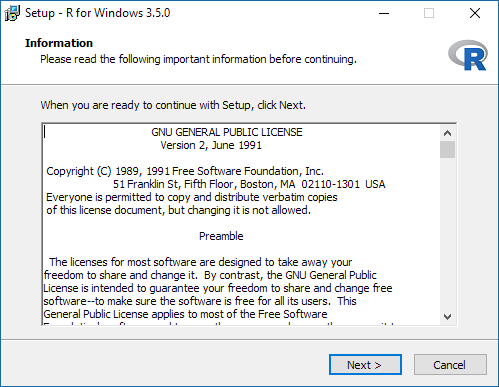
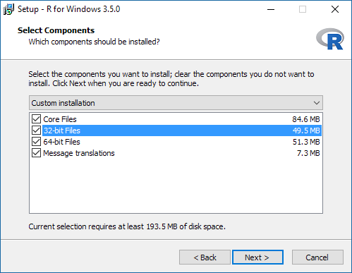
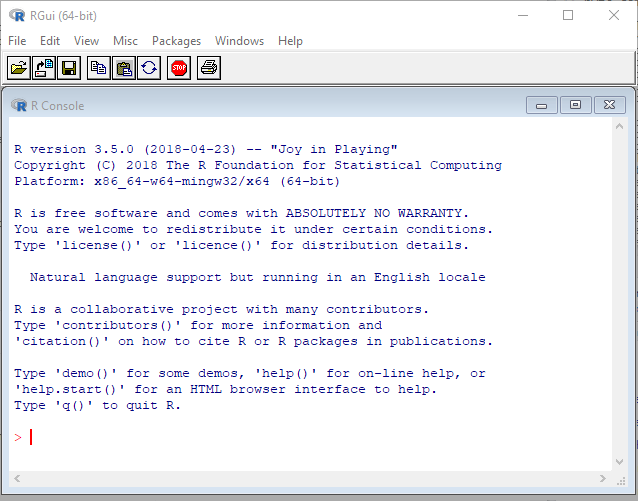
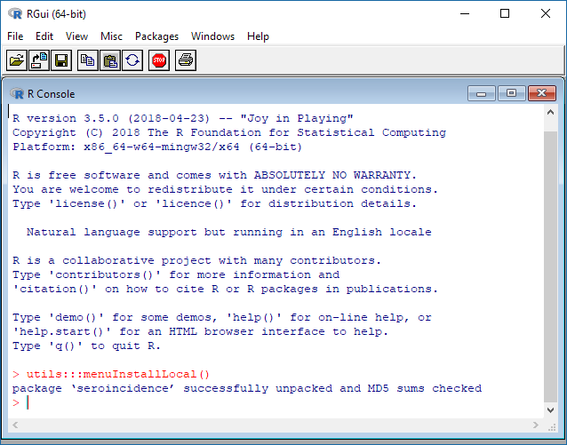

Seroincidence package installation manual
European Centre for Disease Prevention and Control (ECDC)
2022-04-12
Source:vignettes/installation.Rmd
installation.Rmd1. Introduction
Package serocalculator is written in programming language R and end user must have access to a working installation of R engine. This document describes the most common setup with R installed locally on the user’s computer. The screenshots refer to the classical R interface, but the package can also be opened in other Graphical User Interfaces fo R like e.g. RStudio.
2. Installation steps
R is a free software and can be downloaded from http://cran.r-project.org/. Latest version as of writing this document is R 3.5.0. Once the appropriate, operating system dependent, version is downloaded, install it on your computer following the standard procedure applicable to the operating system. For Windows the file to be downloaded is the so-called base distribution: http://cran.r-project.org/bin/windows/base/.
2.1. Installing R
Start the R installer and follow the presented steps:

It is advised to have R installed in folder that does not contain spaces, therefore please adjust the destination location accordingly:

The seroincidence package is compatible with both the 32-bit and the 64-bit version of R. Choose the preferred platform (or both). If unsure install the 32-bit version only, however on compatible platforms the 64-bit version may provide better performance:

It is advised to select Registry entries in the next step for best experience:

R interpreter, when installed on Windows, can be invoked from the start menu folder named R.
Start the preferred version of R (if both the 32-bit: R i386 and the 64-bit: x64 are installed). Graphical user interface for R interpreter will start in a new window:

2.2. Installing seroincidence package
Since this is a new installation of R, the serocalculator package must be installed before first use. The package can be installed either through a menu option in the graphical user interface (GUI) or with a command executed in the R console. Both options are presented:
2.2.1. Package installation from the graphical user interface
Download the seroincidence calculator package from ECDC website: https://github.com/UCD-SEG/serocalculator,https://ucd-seg.github.io/serocalculator/. Two versions of the package are made available:
- binary package (seroincidence_[version].zip) - Microsoft Windows compatible
- Source package (seroincidence_[version].tar.gz) - cross-platform compatible (MS Windows, Linux, MacOS)
If your operating system is Windows then it is best to download the Windows binary package.
Go to menu Packages and select command Install package(s) from local files…:

Select the package file and click “Open”:

Post-installation message should appear:

The package is now installed in R.
2.2.2. Package installation from R console
Alternatively, installation of the package can also be performed by executing one of the following commands in the R console:
# OPTION A
# Install Windows binary package "seroincidence" directly from internet ECDC website:
install.packages(
pkgs = "http://ecdc.europa.eu/en/data-tools/seroincidence-calculator-tool/Documents/
serocalculator_0.1.0.9000.zip",
repos = NULL, type = "win.binary")
# OPTION B
# Install source package directly from internet CRAN repository:
install.packages("seroincidence")
# OPTION C
# Install Windows binary package from a local file:
# install.packages("[PATH/TO/FILE/]seroincidence_[version].zip",
# repos = NULL, type = "win.binary")
# For instance:
install.packages(pkgs = "C:/serocalculator_0.1.0.9000.zip", repos = NULL, type = "win.binary")
# OPTION D
# Install source package from a local file:
install.packages(pkgs = "C:/serocalculator_0.1.0.9000.tar.gz", repos = NULL, type = "source")3. Post-installation
Successful installation can be confirmed by loading the package into the workspace and exploring help files and manuals distributed with the package:
# Load package "seroincidence".
library(serocalculator)
# Show R help for the package.
?serocalculator
# Show tutorial for the package.
vignette(topic = "tutorial", package = "serocalculator")Additionally, most package details can be found when executing the following commands:
# Show description.
packageDescription("serocalculator")## Package: serocalculator
## Type: Package
## Title: Estimating Infection Rates from Serological Data
## Version: 0.1.0.9000
## Date: 2022-03-29
## Authors@R: c( person(given = "Peter", family = "Teunis", email =
## "p.teunis@emory.edu", role = c("aut", "cph"), comment = "Author
## of the method and original code."), person(given = "Jan",
## family = "van Eijkeren", role = c("ctb"), comment = "Author of
## the method and original code."), person(given = "Daniel",
## family = "Lewandowski", email = "daniel@nextpagesoft.net", role
## = c("ctb"), comment = "Creator of the `seroincidence` R
## package."), person(given = "Chantal", family = "Quinten", email
## = "seroincidence@ecdc.europa.eu", role = c("ctb")),
## person(given = "Kristen", family = "Aiemjoy", email =
## "kaiemjoy@ucdavis.edu", role = c("aut", "ctb")), person(given =
## "Douglas Ezra", family = "Morrison", email =
## "demorrison@ucdavis.edu", role = c("aut", "ctb", "cre"),
## comment = "Package maintainer."))
## Description: Translates antibody levels measured in a (cross-sectional)
## population sample into an estimate of the frequency with which
## seroconversions (infections) occur in the sampled population.
## Fork of the "seroincidence" package v2.0.0 on CRAN
## (https://cran.r-project.org/web/packages/seroincidence/index.html)
## Depends: R (>= 2.10)
## License: GPL-3
## Imports: dplyr, Rcpp, stats, utils
## Suggests: knitr, rmarkdown, parallel, pander, Hmisc, tidyverse
## VignetteBuilder: knitr
## LazyData: true
## Encoding: UTF-8
## URL: https://github.com/UCD-SEG/serocalculator,
## https://ucd-seg.github.io/serocalculator/
## RoxygenNote: 7.1.2
## NeedsCompilation: yes
## LinkingTo: Rcpp
## Language: en-US
## Packaged: 2022-04-12 09:48:46 UTC; runner
## Author: Peter Teunis [aut, cph] (Author of the method and original
## code.), Jan van Eijkeren [ctb] (Author of the method and
## original code.), Daniel Lewandowski [ctb] (Creator of the
## `seroincidence` R package.), Chantal Quinten [ctb], Kristen
## Aiemjoy [aut, ctb], Douglas Ezra Morrison [aut, ctb, cre]
## (Package maintainer.)
## Maintainer: Douglas Ezra Morrison <demorrison@ucdavis.edu>
## Built: R 4.1.3; x86_64-pc-linux-gnu; 2022-04-12 09:48:46 UTC; unix
## RemotePkgRef: local::.
## RemoteType: local
##
## -- File: /home/runner/work/_temp/Library/serocalculator/Meta/package.rds
# Show citation.
citation("serocalculator")##
## To cite package 'serocalculator' in publications use:
##
## Peter Teunis, Kristen Aiemjoy and Douglas Ezra Morrison (2022).
## serocalculator: Estimating Infection Rates from Serological Data.
## https://github.com/UCD-SEG/serocalculator,
## https://ucd-seg.github.io/serocalculator/.
##
## A BibTeX entry for LaTeX users is
##
## @Manual{,
## title = {serocalculator: Estimating Infection Rates from Serological Data},
## author = {Peter Teunis and Kristen Aiemjoy and Douglas Ezra Morrison},
## year = {2022},
## note = {https://github.com/UCD-SEG/serocalculator,
## https://ucd-seg.github.io/serocalculator/},
## }